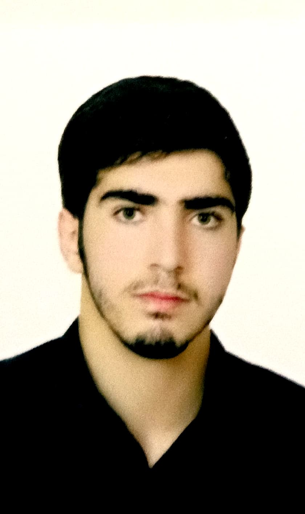

انگیزش نامه
هدفمند، متفکر، بااراده

انگیزه و هدف من از انتخاب این رشته و حرفه
برای رشته مهندسی کامپیوتر گرایش نرم افزار در مقطع کارشناسی ارشد درخواست می نویسم.من علاقه زیادی به برنامه نویسی و ایجاد نرم افزار دارم. عقیده من بر این است که درکنار اساتید و افراد باتجربه و زبده میتوان مهارتهای زیادی را بدست آورد و شانس من برای غنی سازی دانش و پیشرفت های حرفه ای زیاد خواهد شد.
- 
- سن27
- محل سکونتایران
- آدرسلرستان خرم آباد
- ایمیلr.azad6742@ymail.com
- تلفن09035339415
با سلام احترام، اینجانب رضا آزادمهر دوران هنرستان را در رشته کامپیوتر تحصیل نموده و بعد از گرفتن دیپلم از طریق آزمون سراسری در رشته فناوری اطلاعات در مقطع کاردانی ناپیوسته در دانشکده فنی شهرستان خرم آباد تحصیل نموده بعد از فارغ التحصیلی در این مقطع در دانشگاه آزاد در رشته مهندسی نرم افزار برای مقطع کارشناسی ناپیوسته ثبت نام نموده ام و در سال 97 فارغ التحصیل شدم و بعد از اتمام مقطع کارشناسی به خدمت سربازی در آمده و بعد از پایان سربازی با آزمون استخدامی در سازمان صدا و سیما مشغول به کار شده ام و در حوزه مربوط به رشته خودم در این سازمان قعالیت می نمایم با توجه به شرایط کاری و بر حسب علاقه در آزمون کارشناسی ارشد شرکت نموده و در رشته مهندسی نرم افزار دانشگاه پیام نور شهرری قبول شده ام که با اشتیاق فراوان برای ادامه تحصیل در رشته مهندسی نرمافزار در دانشگاه پیام نور درخواست خود را ارائه مینمایم. دلیل انتخاب این دانشگاه، شهرت علمی، کادر آموزشی برجسته و محیط پژوهشی غنی آن است که امکان یادگیری عمیق و توسعه مهارتهای حرفهای را فراهم میآورد. تحقیقات من در مورد این دانشگاه نشان داده است که برنامههای آموزشی و پژوهشی آن با اهداف تحصیلی و حرفهای من همسو است. آنچه که بیش از همه مرا به این دانشگاه جذب نموده است، رویکرد بینالمللی آن در تدریس و پژوهش، امکانات تحقیقاتی گسترده و همکاریهای علمی آن با سایر دانشگاهها و صنعت است. فرصت تعامل با اساتید برجسته و بهرهگیری از منابع پیشرفته، انگیزه من را برای انتخاب این دانشگاه دوچندان کرده است. من از قبل با حوزه تخصصی رشته خود آشنایی داشتهام و در طول تحصیل و فعالیتهای علمی خود، دانش تئوری و عملی ارزشمندی را کسب کردهام. تجربه پروژههای تحقیقاتی، شرکت در کنفرانسها و مطالعه مقالات علمی، بینش من را در این حوزه تقویت کرده است. در این دانشگاه، مایلم تجربیات جدیدی از جمله کار بر روی پروژههای پژوهشی پیشرفته، همکاری با محققان برجسته، و آشنایی با روشهای نوین علمی و صنعتی را کسب نمایم. همچنین، قصد دارم مهارتهای عملی خود را در راستای بهکارگیری دانش تئوری در دنیای واقعی گسترش دهم. حوزه تخصصی مورد علاقه من شامل مهندسی نرمافزار، هوش مصنوعی و توسعه سیستمهای مقیاسپذیر است. علاقهمندم در این زمینه فعالیتهای علمی بیشتری انجام داده و در توسعه دانش این حوزه نقش داشته باشم. این امر نه تنها موجب رشد شخصی من خواهد شد، بلکه به توسعه علمی و صنعتی نیز کمک خواهد کرد.تمایل زیادی به ادامه تحصیل در مقاطع بالاتر دارم و برنامهریزی کردهام که پس از اتمام این دوره، در مقاطع تحصیلات تکمیلی ادامه دهم. هدف من، تبدیل شدن به یک پژوهشگر یا متخصص حرفهای در این حوزه و مشارکت در پروژههای علمی و صنعتی مهم است. پس از اتمام تحصیل، قصد دارم در حوزه توسعه نرمافزار و مهندسی سیستمهای هوشمند فعالیت نمایم و با استفاده از دانش و مهارتهای کسبشده، در پیشبرد اهداف علمی و صنعتی نقش ایفا کنم. همچنین، امیدوارم با شرکت در پروژههای تحقیقاتی و نوآورانه، تأثیر مثبتی در جامعه و صنعت داشته باشم. جدا از تحصیل و کار، به برنامهنویسی، مطالعه کتابهای تخصصی و ورزش علاقهمندم. این فعالیتها به من کمک میکنند تا ذهنی پویا و خلاق داشته باشم و تعادل مناسبی میان زندگی شخصی و حرفهای خود ایجاد کنم. یکی از توانمندیهای خاص من که معتقدم دانشگاه باید از آن مطلع باشد، توانایی تحلیل و حل مسئله، تفکر خلاق و مدیریت پروژههای علمی است. همچنین، مهارتهای ارتباطی قوی و توانایی کار تیمی از دیگر ویژگیهای من است که میتواند در محیط دانشگاه و پژوهشی بسیار مفید واقع شود.
با تشکر از توجه شما به درخواست بنده، امیدوارم فرصتی برای پیوستن به این دانشگاه ارزشمند داشته باشم و بتوانم سهمی در ارتقای دانش و پژوهش ایفا نمایم.